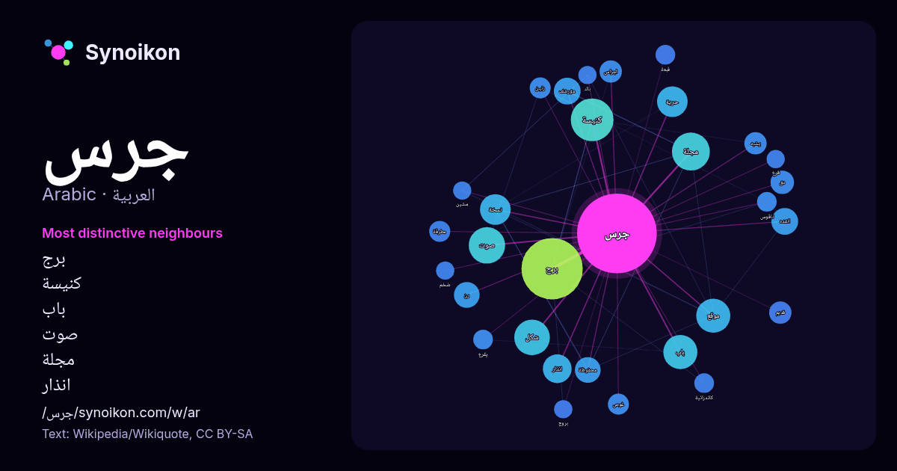

العربية · قائمة كلمات اليوم
جرس
“bell” · الكلمات الموجودة حولها في 575 ورودًا من ويكيبيديا, Wikiquote.

الجيران الأكثر تميّزًا
- برج 54×
- كنيسة 17×
- باب 16×
- صوت 15×
- مجلة 15×
- انذار 15×
- مؤرشف 14×
- انقذه 14×
- رن 13×
- حرية 13×
- محفوظة 12×
- نسخة 11×
- دق 11×
- شكل 10×
- اجراس 9.9×
- موقع 9.0×
- مطرقة 8.8×
- يشبه 8.8×
- غوص 8.6×
- رنين 8.4×
× = كم مرة أكثر مما في نصوص ويكيبيديا العامة.
الجيران الأكثر تكرارًا
- برج 68
- كنيسة 33
- مجلة 26
- صوت 24
- شكل 23
- باب 21
- موقع 21
- حرية 17
- نسخة 17
- انذار 15
- اصل 14
- انقذه 13
- مؤرشف 13
- رن 12
- محفوظة 12
- اكبر 11
- دق 10
- اجراس 9
- قديم 9
- قناة 9
في السياق
- يشبه الجرس الطبلة لكنه مفتوح من الجهة الأسطوانية الواسعة بعكس الطبلة التي تكون مكسوة بالجلد. في داخل الجرس تتدلى مطرقة كروية، وعندما يحرك الجرس تضرب المطرقة Wikipedia snippets · جرس
- جرس أكسفورد الكهربائي ويعرف ايضاً باسم بطارية كلاريندون الجافة هو جرس تجريبي تم إنشاؤه في عام 1840م ويوجد في ممر مجاور لردهة مختبر كلاريندون في جامعة Wikipedia snippets · جرس أكسفورد الكهربائي
- جرس المرح (بإلانجليزية: Joy buzzer) هو جهاز مزاح عملي يتكون من نابض ملفوف داخل قرص يتم ارتداؤه في راحة اليد. عندما يصافح مرتديها شخصًا آخر، يقوم أحد الأزرار Wikipedia snippets · جرس المرح
- جرس القيصر تعديل - تعديل مصدري - تعديل ويكي بيانات جرس القيصر (الروسية: Царь-колокол) يوجد على الأرض التابعة لمبنى الكرملين في موسكو، ويبلغ ارتفاعه 6.14 Wikipedia snippets · جرس القيصر
- جرس سفينة أداة موسيقية ذات صوت رنان. وتستخدم أيضًا أجراس السفينة للسلامة في الظروف السديمية. الاقتصادية : الشرطة الإيطالية تحقق في اختفاء جرس السفينة Wikipedia snippets · جرس سفينة
- أم جرس أو أمجاراس هي عاصمة منطقة إندي إست في شمال تشاد. على الرغم من كونها في السابق واحة صحراوية منعزلة، فإن عدد سكانها حسب تعداد 2009 يبلغ 20،850، وقد Wikipedia snippets · أم جرس
- جرسية أو نبات جرس عيد الميلاد (الاسم العلمي Blandfordia)، جنس نباتات مزهرة من الهليونيات وفصيلة الجرسيات. وموطنه الأصلي شرق أستراليا. (illustrated by Edward Wikipedia snippets · جرسية
- جُلجُل البقرة أو جرس البقر أو القرقاع هو جرس يُعلق حول عنق الماشية التي تتجول بحرية حتى يتمكن الرعاة من تتبع الحيوان عبر صوت الجرس عندما يرعى الحيوان Wikipedia snippets · جلجل بقرة
كلمات أخرى
- أغنية
- إله
- تاريخ
- جبل
- جزيرة
- جسر
- حديقة
- حصان
- حقيقة
- حياة
- خبز
- خريطة
- خريف
- ذهب
- زمن
- ساعة
- شاي
- شتاء
- صحة
- صحراء
- صمت
- صيف
- طبيعة
- طريق
- طعام
- ظل
- عائلة
- عاصفة
- عسل
- علم
- عمل
- غابة
- فن
- قطار
- قطة
- قلب
- قوة
- كلب
- لغة
- ماء
- مال
- مدينة
- مرآة
- مطر
- ملح
- مناخ
- موت
- نجم
- والدة
حُسبت مسبقًا في 2026-10-09 بالإعدادات الافتراضية (±5 كلمات، مدوّنة متوسطة). يمكن للخريطة التفاعلية تحديثها ببيانات حية.
واجهة مترجمة آليًا؛ نرحب بالتصحيحات.